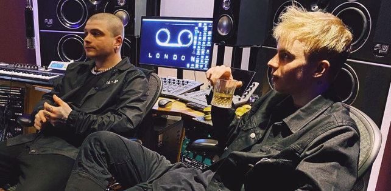

Музыка, продюсирование
Увлечение битмейкингом, пением, продюсированием, играю на гитаре, осваиваю свойства звука, создание песен, интересно творческое развитие и работа в этой отрасли
Нравится реализовывать свою фантазию в этом, ведь звук и слово при должных усилиях вполне могут достучаться до самого сокровенного в душе человека и сопровождать его по жизни
